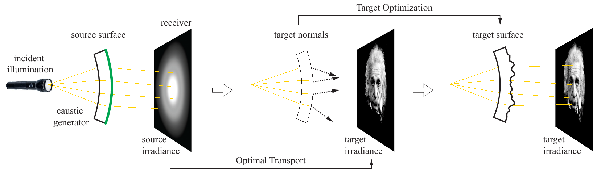

Caustic Design
Caustic is an area of reflected or refracted light, often curve shaped with high illumination. Such caustics are caused by either reflective or transparent objects as glasses, water or metallic objects.
In this project, we utilize the refractive behaviour of acrylic glass in order to create a caustic image. We will thereby take a target image as an input that we will in the end be able to project onto a receiving plane.
We will give an overview over the relevant steps to come from an image to a shaped acrylic glass object and present few results we achieved with our implementation.
Overview
Figure 1 gives an overview over the algorithm. We start from the left. First we have a light source, that provides incident illumination which passes the acrylic object (caustic generator) and forms the source irradiance on the receiving plane. Thereby, the source surface is the outgoing surface of our acrylic glass object. We then need to find an Optimal Transport between the source- and the target-irradiance. Given this optimal transport, we can calculate where each light-ray needs to be redirected to and we can calculate what the normals for need to be to achieve the desired refraction of the light-rays.
This brings us the final step, the Target Optimization. In this step, we calculate how the source surface needs to be modified to be as close to the desired normals as possible. The resulting surface is called the target surface.
Algorithm
The algorithm comprises of three main parts, which we will describe here.- Optimal Transport Map (OTM) Computation
- Natural Neighbor Interpolation
- Target Optimization
Optimal Transport Map Computation
In the next step, we remove the source distribution an plug in the target distribution. We now have a non-matching Voronoi-diagram-distribution pair (2). At this point, we transform the Voronoi diagram into a power diagram (or Weighted Voronoi diagram) by introducing weights. Each cell has an associated weight. If all weights are zero, the power diagram corresponds to the original Voronoi diagram. By increasing the weight of a cell, this cell grows, by decreasing the weight, the corresponding cell shrinks.
Step (3) finally optimizes the weight vector of the Power diagram to again have the same irradiance in each cell and at the same time, move each cell as few as possible. This process is a convex optimization, for which we use an L-BFGS solver [6].
Having the Optimal Transport Map, we have a direct mapping for each cell from the initial Voronoi diagram to the optimized power diagram. This gives us the information, were each light-ray in a cell needs to be redirected to, in order to form our desired image.
 Figure 2: OTM Steps. Source: [1]
Figure 2: OTM Steps. Source: [1]
Multi-Scale Approach
As calculating the OTM is a convex optimization, we can plug in an initial guess. The quality of this initial guess has an significant impact on the duration of the optimization process. Therefore, we calculate the OTM on different levels. We thereby start with fewer cells and a lower-resolution target distribution on the lowest level. We then use the result of that optimization as an initial guess for the next higher level. This step is repeated several times until we reach our target level that we want to compute.

Figure 3: Weight-injection for Multi-Scale-Approach
In Figure 3, one can see the lower level Voronoi diagram on the left and the next higher Voronoi diagram on the right.
When the optimization of the lower level diagram succeeds, we use the weight of the highlighted cell and inject it as an initial guess for each cell highlighted in the right diagram.
In the following, we have two videos that show the process of calculating the OTM. On the left, the video shows the creation of the initial Voronoi diagram.
On the right, the weights of the previously calculated initial Voronoi diagram (or power diagram, as we are working with weights now) are optimized using a manually Gradient Descent approach.
The calculation using the aforementioned L-BFGS solver is faster, but the manual implementation shows the movement of the cells better.
One can see, that the cells are moving towards the center of the image. This happens, because the weights of the outer cells are increasing and therefore the outer cells are growing and pushing the inner cells more to the center.
Voronoi Generation
The video shows a slowed down version of the process of creating an initial Voronoi Diagram using Lloyd Sampling. The amount of sites in the Voronoi Diagram is set to 200. The Lloyd Sampling converges when all sites nearly contain the same irradiance.
Optimal Transport
The video shows a speeded up version of the optimization to retrieve the optimal transport map. A manually implemented Gradient Descent approach is used to solve the convex optimization function.
Natural Neighbor Interpolation
Target Optimization
Results
We consider general polygonal meshes in the plane that admit an orthogonal dual with prescribed dual/primal edge length ratios as they directly provide perfect discrete Laplace-Beltrami operators.
Misc
We consider general polygonal meshes in the plane that admit an orthogonal dual with prescribed dual/primal edge length ratios as they directly provide perfect discrete Laplace-Beltrami operators.
Table 1
| Name | Value | Description |
|---|---|---|
| Laplace | 26 | --- |
| Beltrami | 42 | n/a |
Table 2
| Name | Value | Description |
|---|---|---|
| Laplace | 26 | --- |
| Beltrami | 42 | n/a |
Text
We consider general polygonal meshes in the plane that admit an orthogonal dual with prescribed dual/primal edge length ratios as they directly provide perfect discrete Laplace-Beltrami operators.
def load_image(nr, flat=True):
img = io.imread(get_path(nr), as_grey=True)
if flat:
# print(img.shape)
img = img.reshape(-1)
# print(np.amin(img), np.amax(img))
print("Loaded img " + str(nr))
return img
References
- [1] SCHWARTZBURG, Y. et al., High-Contrast Computational Caustic Design, ACM Transaction on Graphics (TOG) 33, 4, 74.
- [2] DE GOES, F. et al., Blue noise through optimal transport. ACM Transaction on Graphics (TOG) 31, 5, 171.
- [3] ALEXANDER GESSLER AND OTHERS 2015, Open Asset Import Library, http://assimp.sourceforge.net/, last retrieved 09-2015
- [4] GRIMALDI, J.-P. et al., LuxRender, http://www.luxrender.net/, last retrieved 09-205
- [5] YVINEC, M. 2013. 2D triangulations. In CGAL User Reference Manual, 4.3 ed. CGAL Editor Board
- [6] LIU, D. C. AND NOCEDAL, J., On the limited memory BFGS method for large scale optimization methods, Mathematical Programming, 45 (1989), pp. 503-528.
- [7] AGARWAL, S. AND MIERLE, K. AND OTHERS, Ceres Solver, http://ceres-solver.org/, last retrieved 09-2015
- [8] ROOSENDAAL, T. AND OTHERS, Blender, http://www.blender.org/, last retrieved 09-2015